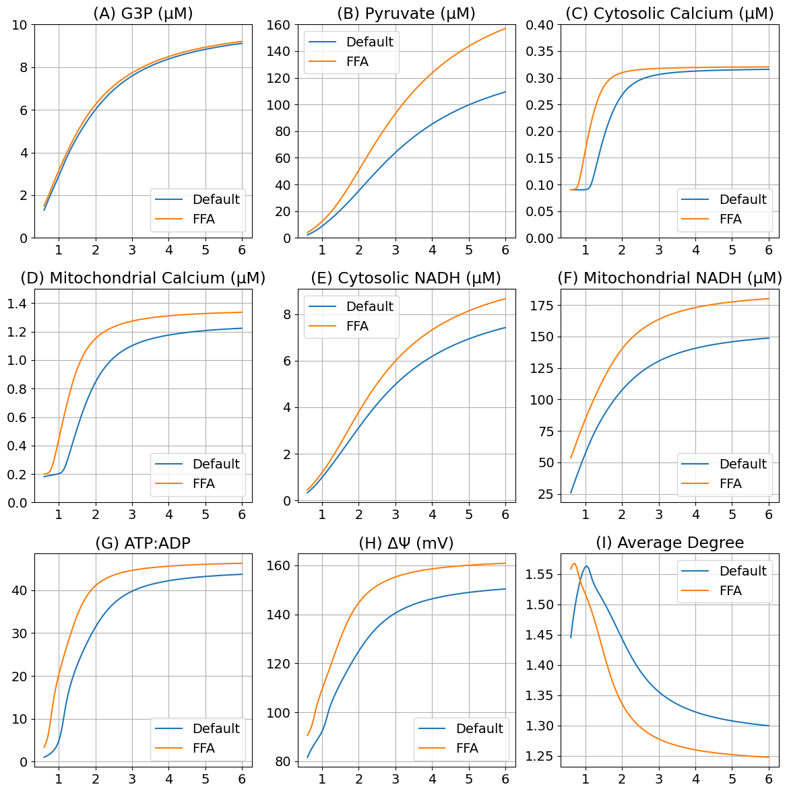
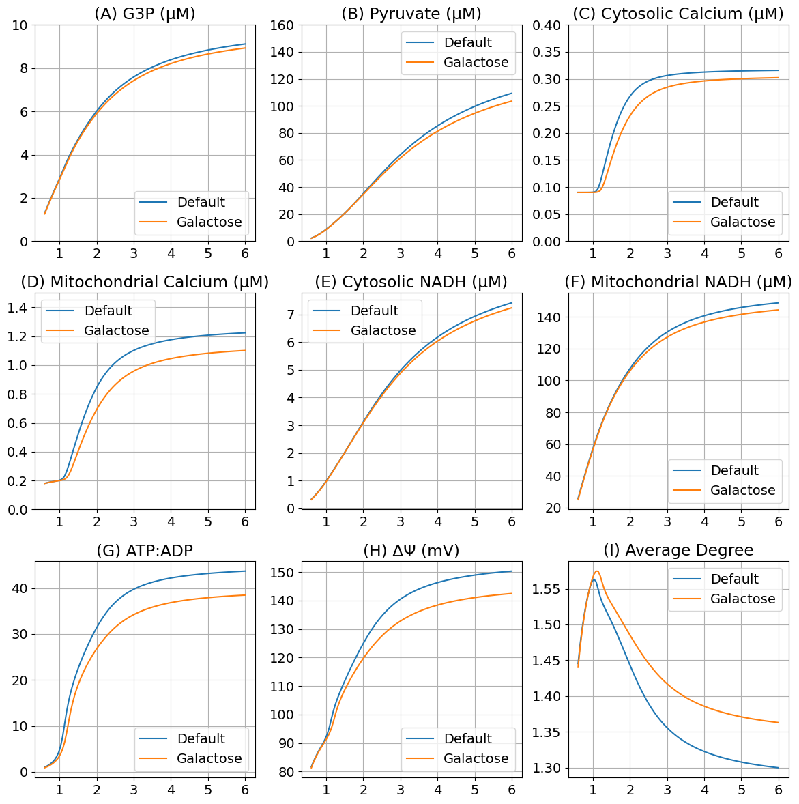

Free fatty acid and galactose treatment
Free fatty acid and galactose treatment#
Free fatty acid: adding more citric acid cycle (CAC) flux
Galactose: Tweak the stoichiometry so that glycolysis yields no ATP.
using DifferentialEquations
using ModelingToolkit
using MitochondrialDynamics
using MitochondrialDynamics: GlcConst, G3P, Pyr, NADH_c, NADH_m, ATP_c, ADP_c, AMP_c, Ca_m, Ca_c, x, ΔΨm, degavg, J_CAC
import MitochondrialDynamics.Utils: second, μM, mV, mM, Hz
import PyPlot as plt
rcParams = plt.PyDict(plt.matplotlib."rcParams")
rcParams["font.size"] = 14
# rcParams["font.sans-serif"] = "Arial"
# rcParams["font.family"] = "sans-serif"
┌ Info: Precompiling MitochondrialDynamics [1a231dcf-63c2-466e-8f46-4027ba595b90]
└ @ Base loading.jl:1662
14
@named sys = make_model()
pidx = Dict(k => i for (i, k) in enumerate(parameters(sys)))
idxGlc = pidx[GlcConst]
# Empty array = using default u0
prob = SteadyStateProblem(sys, [])
sol = solve(prob)
u: 10-element Vector{Float64}:
0.057273163610509256
0.0009823894350451477
0.00020167474243267328
0.09219003302512406
0.0028959418987082124
0.008754847026242532
3.594666227154548
0.14839336652653223
0.24329658006230495
0.05827633476324475
glc = range(3.0mM, 30.0mM, length=101) # Range of glucose
function remake_glc(prob, g)
p = copy(prob.p)
p[idxGlc] = g
remake(prob; p=p)
end
sols = map(glc) do g
solve(remake_glc(prob, g), DynamicSS(Rodas5()))
end
# Additional CAC flux: 3.4 μM/s
@named sysffa = make_model(j_ffa=sol[J_CAC] * 0.5)
probffa = SteadyStateProblem(sysffa, [])
solsffa = map(glc) do g
solve(remake_glc(probffa, g), DynamicSS(Rodas5()))
end
# Additional CAC flux: 3.4 μM/s
@named sys_gal = make_model(gk_atp_stoich=4)
prob_gal = SteadyStateProblem(sys_gal, [])
sols_gal = map(glc) do g
solve(remake_glc(prob_gal, g), DynamicSS(Rodas5()))
end
101-element Vector{SciMLBase.NonlinearSolution{Float64, 1, Vector{Float64}, Vector{Float64}, SteadyStateProblem{Vector{Float64}, true, Vector{Float64}, ODEFunction{true, ModelingToolkit.var"#f#460"{RuntimeGeneratedFunctions.RuntimeGeneratedFunction{(:ˍ₋arg1, :ˍ₋arg2, :t), ModelingToolkit.var"#_RGF_ModTag", ModelingToolkit.var"#_RGF_ModTag", (0x19e4dd06, 0x1a530fc2, 0x9b0c1c73, 0x8a2f51bb, 0x4186eaa1)}, RuntimeGeneratedFunctions.RuntimeGeneratedFunction{(:ˍ₋out, :ˍ₋arg1, :ˍ₋arg2, :t), ModelingToolkit.var"#_RGF_ModTag", ModelingToolkit.var"#_RGF_ModTag", (0x49a64309, 0x53a59f34, 0xb20d0214, 0x14f96d87, 0xcf216652)}}, LinearAlgebra.UniformScaling{Bool}, Nothing, Nothing, Nothing, Nothing, Nothing, Nothing, Nothing, Nothing, Nothing, Nothing, Vector{Symbol}, Symbol, ModelingToolkit.var"#generated_observed#465"{ODESystem, Dict{Any, Any}}, Nothing}, Base.Pairs{Symbol, Union{}, Tuple{}, NamedTuple{(), Tuple{}}}}, DynamicSS{Rodas5{0, true, Nothing, typeof(OrdinaryDiffEq.DEFAULT_PRECS), Val{:forward}, true, nothing}, Float64, Float64, Float64}, Nothing, Nothing}}:
[0.025138005257468735, 0.0003156527733099666, 0.00017954979201150473, 0.08133251014940464, 0.0012593455007376953, 0.0021415324128450652, 1.38468234221591, 1.5815925153225505, 0.22609710547725118, 0.039768904953534405]
[0.029632565324755313, 0.0003880119245671741, 0.00018310061760202852, 0.0831393290186208, 0.001482402305222607, 0.0027665646076870613, 1.661337634404323, 1.3098261998179674, 0.23105716682579489, 0.04378992447299913]
[0.03407096887649989, 0.00046523838599213754, 0.00018618753465941205, 0.08470804515651714, 0.0017031953592219898, 0.0034674471533687776, 1.9340396277966792, 1.0729808941337196, 0.23470594301268555, 0.047220908442281447]
[0.03844243940082592, 0.0005473807778777099, 0.0001889381171241028, 0.08610364786302006, 0.0019215168146812897, 0.004245064549325599, 2.2018242831072516, 0.8665792264755112, 0.23745538047022516, 0.05018851509375924]
[0.04273285091742292, 0.0006343697830318249, 0.00019144469642649306, 0.08737240235758752, 0.0021370238536492763, 0.005099174849082791, 2.4635610185662022, 0.6875770349724186, 0.23956308440700508, 0.05276304051871796]
[0.04692847867020882, 0.0007260612428161227, 0.00019378783651253766, 0.08855318240340253, 0.0023494457643666485, 0.006028702292095075, 2.718108685187821, 0.5336655364872295, 0.24118239393183621, 0.05499587174302262]
[0.051017719608415925, 0.0008222564876464053, 0.00019605561182606533, 0.08968544170762006, 0.002558704775118747, 0.00703188906648716, 2.964319567633533, 0.40296444078334076, 0.24244472215201887, 0.05688434670343926]
[0.054992200264819394, 0.0009227130246392976, 0.00019837166484364452, 0.09081812152302915, 0.0027650330670320063, 0.008106359612120454, 3.200921150593312, 0.29388368902872175, 0.243382148577534, 0.05844518634846458]
[0.05884798994402261, 0.0010271481826970297, 0.00020095574673010947, 0.09202345184804679, 0.0029691382806173584, 0.00924904734541551, 3.426190929683361, 0.20507471389757245, 0.2440314941642217, 0.059617273791502175]
[0.06258732078205184, 0.0011352270611442365, 0.00020428404068026146, 0.09341937486739538, 0.00317244014176495, 0.01045567514540525, 3.6371331129300666, 0.1354450536470408, 0.24436211490901658, 0.06027271567939689]
[0.0662192556707701, 0.0012464904368737926, 0.00020954309888603583, 0.09518775973126825, 0.0033771454907273206, 0.011718531837712178, 3.827468040291715, 0.08419561353719336, 0.24434613886061604, 0.06021964799526306]
[0.06974776028105428, 0.001360109639681148, 0.00021959294193179833, 0.09747679062030132, 0.0035847088454420612, 0.01301985856214008, 3.984596611877559, 0.05049993924598927, 0.24385220302816082, 0.059265074378506664]
[0.07313739874774182, 0.0014747269759333107, 0.00023855929036048902, 0.10004775130386397, 0.0037912596570543852, 0.014330438483559568, 4.094932710144712, 0.03169477052343661, 0.24297910228464387, 0.05774917638800893]
⋮
[0.1428489439016932, 0.006980588519026654, 0.0010913566542675244, 0.14170805455643726, 0.008777549644266396, 0.0986138098029316, 4.382444131812436, 0.00279769609535234, 0.2092617174020393, 0.0296363617051174]
[0.14300163830102125, 0.007006649773944757, 0.001092417211411836, 0.14178744796127776, 0.008792697421325733, 0.0991096762512712, 4.3825384972727335, 0.00279325321174738, 0.20914211786698336, 0.029577646001590997]
[0.1431502265163807, 0.0070321461885455485, 0.001093445495641044, 0.14186455138053375, 0.008807487463398525, 0.09959560814120196, 4.382629760854438, 0.0027889596595257163, 0.20902577597452307, 0.029520671179881965]
[0.14329485641736966, 0.007057093397526119, 0.0010944428487496562, 0.14193945392981222, 0.008821931015460138, 0.10007184921384504, 4.382718062223555, 0.0027848085455834766, 0.20891257404538083, 0.029465367606389844]
[0.1434356693072111, 0.007081506536397445, 0.0010954105423639632, 0.1420122404246447, 0.008836038886126623, 0.10053863690901156, 4.382803533136431, 0.002780793377942063, 0.20880239954213473, 0.029411669103525873]
[0.14357280026346025, 0.007105400257940879, 0.0010963497823248854, 0.14208299162397664, 0.008849821467592897, 0.10099620248608564, 4.382886297974227, 0.0027769080378300766, 0.2086951675292301, 0.029359484321756352]
[0.14370637845889128, 0.0071287887482357655, 0.0010972617127553443, 0.1421517844581419, 0.008863288754535022, 0.10144477114851855, 4.382966474235807, 0.002773146754008258, 0.20859075269010202, 0.02930878119352658]
[0.14383652746380765, 0.007151685742250583, 0.0010981474198376042, 0.1422186922423924, 0.008876450362035708, 0.1018845621710786, 4.383044172992693, 0.0027695040791346627, 0.20848905630698047, 0.0292595029260862]
[0.14396336553093986, 0.007174104538993444, 0.0010990079353238283, 0.14228378487697788, 0.00888931554258886, 0.10231578902910199, 4.383119499309341, 0.0027659748679874927, 0.20838998399107478, 0.029211595297387566]
[0.14408700586401982, 0.007196058016220322, 0.0010998442398010052, 0.14234712903469798, 0.008901893202235561, 0.10273865952908111, 4.383192552631719, 0.0027625542573811094, 0.20829344515865175, 0.029165006903384704]
[0.14420755687104944, 0.007217558644701762, 0.0011006572657295997, 0.14240878833678522, 0.008914191915880549, 0.1031533759400039, 4.383263427146874, 0.0027592376476267295, 0.2081993531716963, 0.02911968859294404]
[0.14432512240321216, 0.007238618502050642, 0.0011014479002735477, 0.14246882351791065, 0.008926219941835395, 0.10356013512492812, 4.38333221211592, 0.002756020685403935, 0.20810762502111696, 0.029075593499433214]
extract(sols, k) = map(s -> s[k], sols)
function plot_ffa(
sols, solsffa, glc;
figsize=(12, 12),
tight=true,
labels=["Default", "FFA"]
)
glc5 = glc ./ 5
fig, ax = plt.subplots(3, 3; figsize)
ax[1, 1].plot(glc5, extract(sols, G3P) .* 1000, label=labels[1])
ax[1, 1].plot(glc5, extract(solsffa, G3P) .* 1000, label=labels[2])
ax[1, 1].set(title="(A) G3P (μM)", ylim=(0, 10))
ax[1, 2].plot(glc5, extract(sols, Pyr) .* 1000, label=labels[1])
ax[1, 2].plot(glc5, extract(solsffa, Pyr) .* 1000, label=labels[2])
ax[1, 2].set(title="(B) Pyruvate (μM)", ylim=(0, 160))
ax[1, 3].plot(glc5, extract(sols, Ca_c) .* 1000, label=labels[1])
ax[1, 3].plot(glc5, extract(solsffa, Ca_c) .* 1000, label=labels[2])
ax[1, 3].set(title="(C) Cytosolic Calcium (μM)", ylim=(0.0, 0.4))
ax[2, 1].plot(glc5, extract(sols, Ca_m) .* 1000, label=labels[1])
ax[2, 1].plot(glc5, extract(solsffa, Ca_m) .* 1000, label=labels[2])
ax[2, 1].set(title="(D) Mitochondrial Calcium (μM)", ylim=(0.0, 1.5))
ax[2, 2].plot(glc5, extract(sols, NADH_c) .* 1000, label=labels[1])
ax[2, 2].plot(glc5, extract(solsffa, NADH_c) .* 1000, label=labels[2])
ax[2, 2].set(title="(E) Cytosolic NADH (μM)")
ax[2, 3].plot(glc5, extract(sols, NADH_m) .* 1000, label=labels[1])
ax[2, 3].plot(glc5, extract(solsffa, NADH_m) .* 1000, label=labels[2])
ax[2, 3].set(title="(F) Mitochondrial NADH (μM)")
ax[3, 1].plot(glc5, extract(sols, ATP_c) ./ extract(sols, ADP_c), label=labels[1])
ax[3, 1].plot(glc5, extract(solsffa, ATP_c) ./ extract(solsffa, ADP_c), label=labels[2])
ax[3, 1].set(title="(G) ATP:ADP")
ax[3, 2].plot(glc5, extract(sols, ΔΨm) .* 1000, label=labels[1])
ax[3, 2].plot(glc5, extract(solsffa, ΔΨm) .* 1000, label=labels[2])
ax[3, 2].set(title="(H) ΔΨ (mV)")
ax[3, 3].plot(glc5, extract(sols, degavg), label=labels[1])
ax[3, 3].plot(glc5, extract(solsffa, degavg), label=labels[2])
ax[3, 3].set(title="(I) Average Degree")
for a in ax
a.set_xticks(1:6)
a.grid()
a.legend()
end
fig.set_tight_layout(tight)
return fig
end
plot_ffa (generic function with 1 method)
fig_ffa = plot_ffa(sols, solsffa, glc; labels=["Default", "FFA"]);

# Uncomment if pdf file is required
# fig_ffa.savefig("Fig_FFA.tif", dpi=300, format="tiff", pil_kwargs=Dict("compression" => "tiff_lzw"))
fig_gal = plot_ffa(sols, sols_gal, glc; labels=["Default", "Galactose"]);

# Uncomment if pdf file is required
# fig_gal.savefig("Fig_GAL.tif", dpi=300, format="tiff", pil_kwargs=Dict("compression" => "tiff_lzw"))